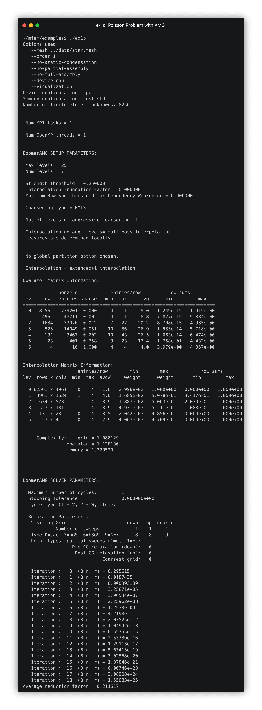
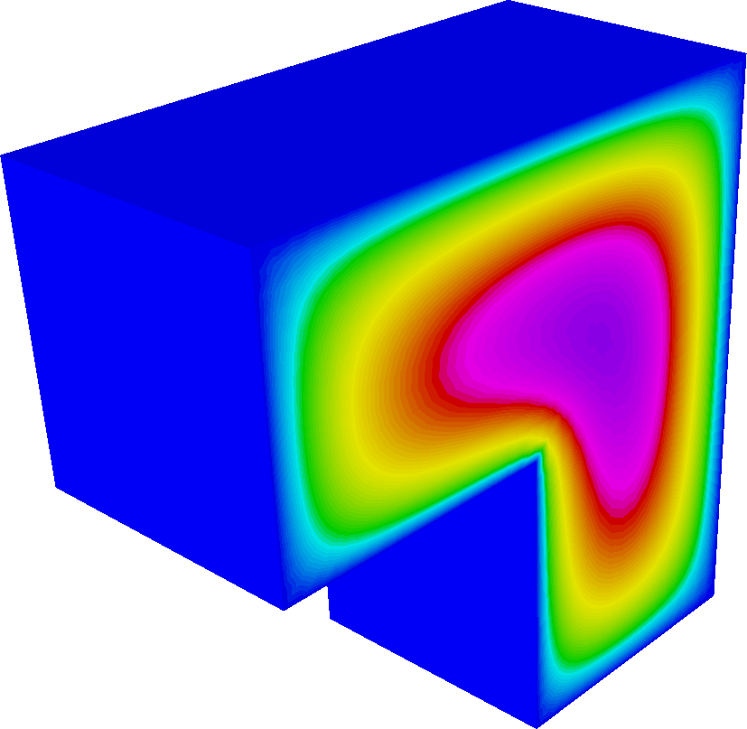
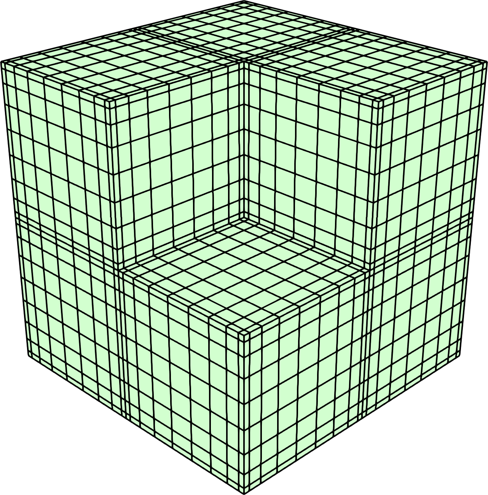

Solvers and Scalability
45 minutes intermediate
Lesson Objectives
Learn about MFEM's support for efficient solvers and preconditioners.
Note
MFEM is designed to be highly scalable and efficient on a wide variety of platforms: from laptops to GPU-accelerated supercomputers. The solvers described in this lesson play a critical role in this parallel scalability.
Scalable algebraic multigrid preconditioners from hypre
MFEM comes with a large number of example codes that demonstrate different physical applications, finite element discretizations, and linear solvers:
- Example 1 solves a Poisson problem,
- Example 2 solves a linear elasticity problem,
- Example 3 solves a definite Maxwell (electromagnetics) problem, and
- Example 4 solves grad-div diffusion problem.
The parallel versions of these examples (ex1p, ex2p, ex3p, and ex4p) each use
suitable algebraic multigrid (AMG) preconditioners from the
hypre solvers library. We describe sample runs with
each of these examples in more details below.
Example 1: Poisson problem and AMG
-
First, make sure you are in the examples subdirectory:
cd ~/mfem/examples -
Build the parallel version of Example 1:
make ex1p -
Run the parallel version of Example 1, solving a Poisson problem:
./ex1p -
After forming the linear system, MFEM uses hypre to construct and apply an AMG preconditioner. Details of the AMG preconditioner are provided in the example output under the headers
BoomerAMG SETUP PARAMETERSandBoomerAMG SOLVER PARAMETERS. -
Click here to view the terminal output
 -
A key feature of AMG methods is their scalability: with default options, convergence is achieved in only 18 conjugate gradient iterations.
-
Let's see what happens if we increase the mesh refinement. Edit
ex1p.cppchanging line 153 as follows:@@ -150,7 +150,7 @@ int main(int argc, char *argv[]) ParMesh pmesh(MPI_COMM_WORLD, mesh); mesh.Clear(); { - int par_ref_levels = 2; + int par_ref_levels = 3; for (int l = 0; l < par_ref_levels; l++) { pmesh.UniformRefinement(); -
This adds one additional level of refinement, making the problem roughly 4 times as large in 2D, or 8 times as large in 3D.
-
Rebuild the example (
make ex1p) and re-run it:./ex1p -
Although the number of unknowns for this problem has increased by roughly 4x, the iteration count remains at 18 due to the scalability of the AMG preconditioner.
-
Let's now try a 3D problem. For that, we just need to choose a 3D mesh using the
-mor--meshcommand line argument. -
Because these problems are more computationally expensive, let's first reduce the refinement level, setting
int par_ref_levels = 1;in theex1p.cppsource code. -
Rebuild the example (
make ex1p) and re-run it using the three-dimensional Fichera mesh:./ex1p -m ../data/fichera.mesh. Convergence is attained in only 16 iterations.

-
Finally, let's take a look at the parallel scalability of the solvers:
- Increase the refinement level:
int par_ref_levels = 2; - Recompile:
make ex1p - Now run the 3D example on 8 cores:
mpirun -np 8 ./ex1p -m ../data/fichera.mesh - This is an example of a weak scaling test: the problem size and the number of processors are both increased by a factor of 8.
- Because the PCG iteration counts remain roughly constant, the total time to solution should remain roughly fixed (minus some overhead and communication cost), even though we are solving a problem that is 8 times larger.
- Increase the refinement level:
Example 2: Linear Elasticity
-
This example demonstrates solving a linear elasticity cantilever beam problem with different materials.
-
This example is designed to work with any of the "beam" meshes provided by MFEM. Run
ls ../data | grep beamto list the available 2D and 3D meshes:beam-hex-nurbs.mesh,beam-hex.mesh,beam-hex.vtk,beam-quad-amr.mesh,beam-quad-nurbs.mesh,beam-quad.mesh,beam-quad.vtk,beam-tet.mesh,beam-tet.vtk,beam-tri.mesh,beam-tri.vtk,beam-wedge.mesh, andbeam-wedge.vtk. -
The elements and boundaries of these meshes are assigned attributes/materials suitable for the cantilever problem:
+----------+----------+
boundary --->| material | material |<--- boundary
attribute 1 | 1 | 2 | attribute 2
(fixed) +----------+----------+ (pull down)
-
Build the example with
make ex2p. -
Try running
./ex2pin the terminal to run a 2D elasticity problem. -
As in Example 1, the linear system is solved using AMG.
-
For this example, two types of AMG solvers can be used:
-
A special version of AMG designed specifically for elasticity (see this paper).
-
AMG for systems.
-
-
To enable the special elasticity AMG, add the flag
-elastto the command line, otherwise, AMG for systems will be used. For example:./ex2p -elast. -
The polynomial degree (order) can be changed with the
--ordercommand line argument (-ofor short). For example:./ex2p -o 2. By default, low-order $(p=1)$ elements are used.
Warning
-
Additionally, static condensation can be used to eliminate interior high-order degrees of freedom and obtain a smaller system. For
--order 1, this has no effect. For higher-order problems, static condensation can improve efficiency. -
In this example, as before, the mesh refinement level can be controlled in the source code through
par_ref_levels.
Note
make ex2p).
-
Running with more than one MPI rank will partition the mesh and run the problem in parallel. Here is a sample 3D run:
mpirun -np 8 ./ex2p -m ../data/beam-hex.mesh -
Try experimenting with different discretization, solver, and parallelization options.
Examples 3 and 4: the de Rham Complex
-
The next two examples demonstrate the use of vector finite element spaces.
-
Example 3 solves an electromagnetics problem using $H(\mathrm{curl})$ finite elements.
-
Example 4 solves a grad-div problem using $H(\mathrm{div})$ finite elements.
-
-
Standard multigrid methods don't always work well for these problems, so we need specialized solvers! (See here for a paper on this topic.)
-
For $H(\mathrm{curl})$ problems, we use the AMS solver from hypre.
-
For $H(\mathrm{div})$ problems, we either use the ADS solver from hypre or a special hybridization solver.
-
Try experimenting with different options to get a feel for the performance of the discretizations and solvers:
-
Change the mesh (2D or 3D) using the
--mesh(-m) command line argument. For example:mpirun -np 16 ex3p -m ../data/beam-hex.mesh. -
Change the polynomial degree using the
--order(-o) command line argument. For example:mpirun -np 32 ex4p -m ../data/square-disc-nurbs.mesh -o 3. -
Run problems in parallel using
mpirun. -
For
ex4p, enable hybridization using the-hbflag. For example:mpirun -np 48 ex4p -m ../data/star-surf.mesh -o 3 -hb.
-
Note
make ex3 ex4 ex3p ex4p
MFEM's native Multigrid solver
-
The previous examples (
ex1p,ex2p,ex3p, andex4p) all used algebraic multigrid methods. MFEM also supports geometric ($h$- and $p$-multigrid) methods. -
These solvers are illustrated in Example 26 (and its parallel variant); see the ex26.cpp and ex26p.cpp source files.
-
Mesh refinement can be set using the
--geometric-refinements(-gr) command line argument. -
The finite element order can be controlled using the
--order-refinements(-or) command line argument.
Warning
-
This example runs matrix-free using MFEM's partial assembly algorithms. Matrix-free methods are much more efficient for high-order problems and also work better on GPU architectures.
-
Try comparing the performance of
ex1pandex26pfor higher-order problems. For example, compare the run time of the following two runs:mpirun -np 32 ./ex26p -m ../data/fichera.mesh -or 2 mpirun -np 32 ./ex1p -m ../data/fichera.mesh -o 1 -
Both examples solve a degree-4 Poisson problem with 1,884,545 degrees of freedom, but one of them is significantly faster.
-
Explore how the number of CG iterations changes as
-orand-grare increased. (For large problems, it may be worth runningex26pin parallel withmpirun.)
Low-order-refined methods

-
Examples 1, 2, 3, and 4 used algebraic methods applied to the discretization matrix for each of the problems. Example 26 showed how to use geometric multigrid together with matrix-free methods.
-
Low-order-refined (LOR) is an alternative matrix-free methodology for solving these problems. The LOR solvers miniapp provides matrix-free solvers for the same problems solved in Examples 1, 3, and 4.
-
Go to the LOR solvers miniapp directory:
cd ~/mfem/miniapps/solvers -
Run
make plor_solversto build the parallel LOR solvers miniapp. -
The
--fe-type(or-fe) command line argument can be used to choose the problem type.-
-fe hsolves an $H^1$ problem (Poisson, equivalent toex1). -
-fe nsolves a Nedelec problem (Maxwell in $H(\mathrm{curl})$, equivalent toex3). -
-fe rsolves a Raviart-Thomas problem (grad-div in $H(\mathrm{div})$, equivalent toex4).
-
-
As usual, the
--mesh(-m) argument can be used to choose the mesh file. (Keep in mind that MFEM's meshes in the data directory are now found in../../datarelative to the miniapp directory.) -
The number of mesh refinements in serial and parallel can be controlled with the
--refine-serialand--refine-parallel(-rsand-rp) command line arguments -
The polynomial degree can be controlled with the
--order(-o) argument. -
Compare the performance of high-order problems with
plor_solversto that of Examples 1, 3, and 4. Here are some sample runs to compare:// 2D, 5th order, 256,800 DOFs mpirun -np 8 ./plor_solvers -fe n -m ../../data/star.mesh -rs 2 -rp 2 -o 5 -no-vis mpirun -np 8 ../../examples/ex3p -m ../../data/star.mesh -o 5 // 3D, 2nd order, 2,378,016 DOFs mpirun -np 24 ./plor_solvers -fe n -m ../../data/fichera.mesh -rs 2 -rp 2 -o 3 -no-vis mpirun -np 24 ../../examples/ex3p -m ../../data/fichera.mesh -o 3 -
For more details on how LOR solvers work in MFEM, see the High-Order Matrix-Free Solvers talk (PDF, video) from the 2021 MFEM community workshop.
Additional solver integrations
In addition to the hypre AMG solvers and MFEM's built-in solvers illustrated above, MFEM also integrates with a number of third-party solver libraries, including:
-
PETSc — see the
~/mfem/examples/petscdirectory -
SuperLU — see the
~/mfem/examples/superludirectory -
STRUMPACK — see
~/mfem/examples/ex11p.cpp -
Ginkgo — see the
~/mfem/examples/ginkgodirectory -
AmgX — see the
~/mfem/examples/amgxdirectory
These third-party libraries are not pre-installed in the AWS image, but you can still peruse the example source code to see the capabilities of the various integrations.
Note
MFEM_USE_*
configuration variables, e.g., by specifying MFEM_USE_PETSC=YES.
Questions?
Next Steps
Back to the MFEM tutorial page